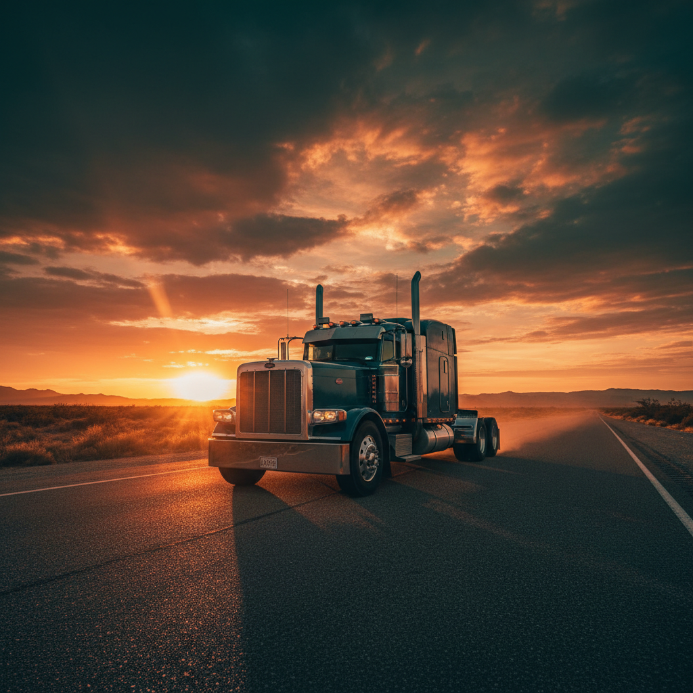
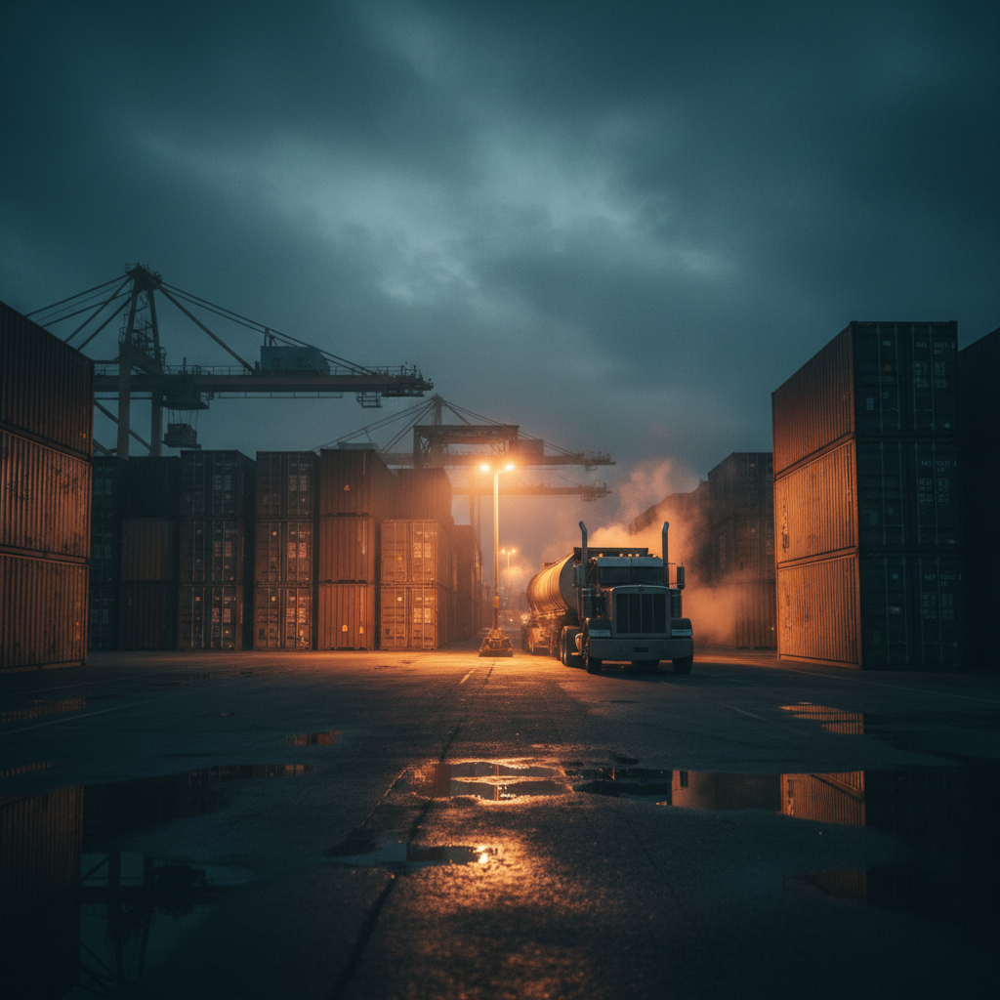
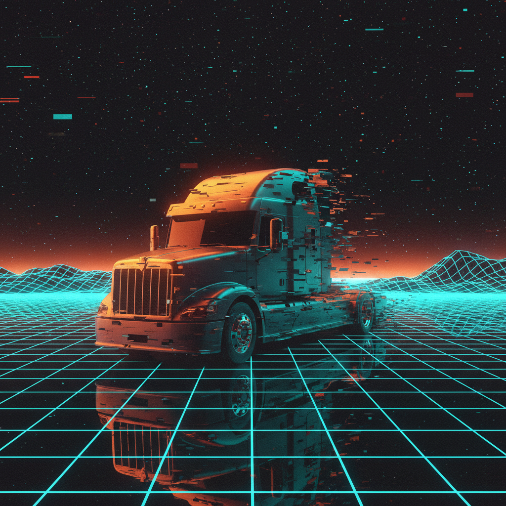
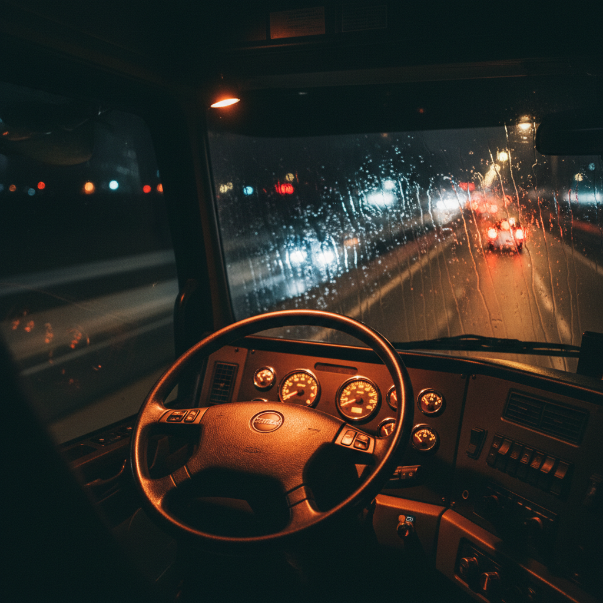

Sunset haul
Visuel de la marque, série route.


Visuel de la marque, série route.

Visuel de la marque, série nuit.

Visuel de la marque, série synthwave.
Le lancement officiel de KAMION approche : boutique ouverte, PayPal en installation, Discord en préparation. Les nouveautés tombent ici.